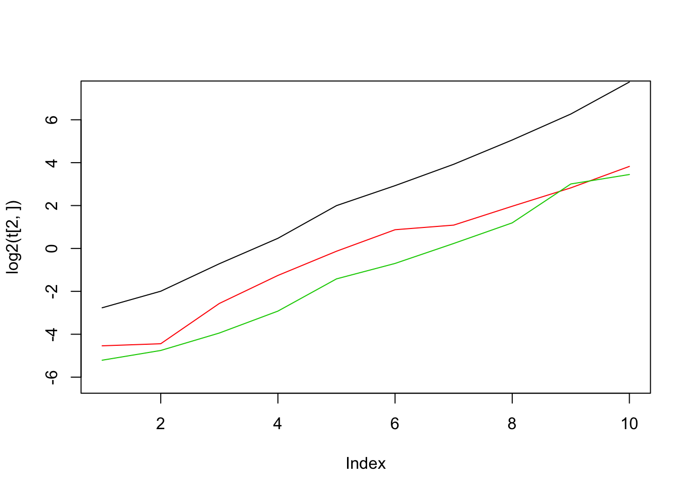

In this documentation, we will analyze convergence of SQP algorithm.
getwd();## [1] "/Users/Yskim/git/mixopt/analysis"rjulia::julia_init();
rjulia::r2j(getwd(),"working_directory");
rjulia::julia_void_eval('cd(working_directory[1])');
rjulia::julia_void_eval('include("sqp.jl")');get_sample = function(n,seed=2017){
set.seed(seed)
n1 = floor(n/2)
z = c(rnorm(n1),4*rt(n-n1,df=6))
z = z[order(abs(z))]
return(z)
}
get_matrix_lik = function(z,m = 1.1){
data = ashr::set_data(z,1)
grid = ashr:::autoselect.mixsd(data, mult=m, mode=0, mixcompdist="normal", grange=c(-Inf,Inf))
grid = c(0,grid)
k = length(grid)
g = ashr::normalmix(rep(1/k,k),rep(0,k),grid)
llik <- t(ashr:::log_comp_dens_conv.normalmix(g,data))
L = llik - apply(llik, 1, max)
L = exp(L)
return(L)
}We sample from the distribution \(z\sim 0.5 N(0,1) + 0.5 t_{6,4}\).
eval_f = function(L,x){
return(-sum(log(L %*% x)) / dim(L)[2])
}
sim_data = function(n, m){
z = get_sample(n);
matrix_lik = get_matrix_lik(z, m);
return(matrix_lik)
}
sim_ip = function(matrix_lik){
n = dim(matrix_lik)[1]; k = dim(matrix_lik)[2];
t = system.time(res <- REBayes::KWDual(matrix_lik, rep(1,k), rep(1,n)/n))[3]
min.f = 1E-8
res$f[res$f < min.f] = 0
return(list(x = res$f / sum(res$f), t = t))
}
sim_sqp = function(matrix_lik){
rjulia::r2j(matrix_lik,"matrix_lik");
t = system.time(rjulia::julia_void_eval('temp = sqp(matrix_lik,1e-8,1e-8,1e-3)'))[3];
x = rjulia::j2r("temp[1]")
x = x / sum(x)
return(list(x = x, t = t))
}We pass the likelihood matrix to Julia and then run the code.
sim_comptime = function(n, m){
# compute likelihood matrix
temp = system.time(matrix_lik <- sim_data(n, m))[3];
# run ip - REBayes
ip = sim_ip(matrix_lik)
# run sqp
sqp = sim_sqp(matrix_lik)
f1 = eval_f(matrix_lik,ip$x)
f2 = eval_f(matrix_lik,sqp$x)
comp_time = c(temp,ip$t,sqp$t)
names(comp_time) = c("L","IP","SQP")
return(list(rel_diff = f2/f1 - 1, norm_diff = sum(abs(ip$x-sqp$x)), comp_time = comp_time))
}Test if it works well
sim_comptime(10000,1.1)## $rel_diff
## [1] 9.992007e-15
##
## $norm_diff
## [1] 7.291963e-06
##
## $comp_time
## L IP SQP
## 1.378 0.781 8.981iter = 10
n_range = 1000 * 2^(1:iter)
m = 1.1
f = rep(0,iter)
t = matrix(0,3,iter)
for (i in 1:iter){
temp = sim_comptime(n_range[i], m)
f[i] = temp$rel_diff
t[,i] = temp$comp_time
}Let’s see how the result is.
f## [1] 3.155254e-13 2.586951e-06 -3.899547e-12 -4.619638e-13 2.004061e-06
## [6] 1.431639e-06 1.352999e-03 5.922814e-05 7.305543e-05 1.033644e-04t(t)## [,1] [,2] [,3]
## [1,] 0.043 0.147 0.027
## [2,] 0.046 0.251 0.037
## [3,] 0.169 0.610 0.065
## [4,] 0.418 1.388 0.132
## [5,] 0.914 3.991 0.374
## [6,] 1.832 7.615 0.616
## [7,] 2.126 15.181 1.174
## [8,] 3.912 33.303 2.287
## [9,] 7.087 77.067 8.037
## [10,] 14.181 216.920 10.915#t = cbind(t,matrix(0,3,3))
#n_range = c(n_range,1000 * 2^(10:12))
#for(i in 10:12){
# temp = system.time(matrix_lik <- sim_data(n_range[i], m))[3];
# sqp = sim_sqp(matrix_lik);
# t[1,i] = temp
# t[2,i] = NA
# t[3,i] = sqp$t
#}m1 = min(log2(t[3,]))-1
m2 = max(log2(t[2,1:9]))+1
plot(log2(t[2,]),type='l',ylim = c(m1,m2))
lines(log2(t[1,]),col=2)
lines(log2(t[3,]),col=3)
This R Markdown site was created with workflowr